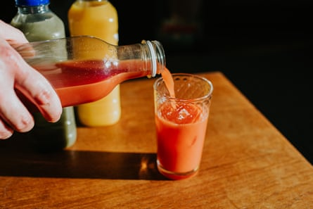
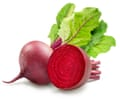

When my sister saw me drinking a glass of orange juice at breakfast, she was horrified. “You’re drinking pure sugar!” she said.
Juice, once considered so virtuous people paid good money to go on “juice fasts”, has been demonised over the past decade. The epidemiologist and author Tim Spector has said orange juice should “come with a health warning” and he’d rather people drink Coca-Cola. Despite this, the global juice market is growing , with chains such as Joe & the Juice expanding rapidly – and in an umbrella review last year, Australian researchers found potential health benefits to drinking juice.
So should you jettison your juicer and boycott juice bars? Or add a glass of OJ to your daily diet? I asked the experts to clear up the confusion.
What is the official guidance on drinking juice?
It depends where you live. In the US, 100% juice is a recommended “primary beverage” alongside water. In Canada , though, juice has been excluded from healthy eating guidelines altogether. Other countries tend to be somewhere in between. The UK, Spain and the Netherlands recommend limiting juice to one serving a day, while in New Zealand the limit is once a week and Australia suggests one serving “occasionally”.
Are there any health benefits?
Sammie Gill, a registered dietitian with the British Dietetic Association , says juices offer a concentrated source of vitamins, minerals and phytochemicals, such as polyphenols. Studies from the US, Canada and Iran “have shown that drinking orange or apple juice is linked with lower levels of inflammation and improvements in cardiovascular health ,” she says. “Fruit juice shouldn’t be discouraged within the context of a healthy balanced diet.”
So what is the problem?
One glass of juice contains about 12 grams of sugar.Photograph: Catherine Falls Commercial/Getty Images
As well as vitamins, juice also provides a concentrated source of sugar (mainly fructose). Consuming too many of these “free sugars” – released when the fruit is crushed into juice – contributes to tooth decay and obesity and may put you at risk of type 2 diabetes. The WHO suggests limiting the intake of free sugars, including those found in fruit juice, to less than 10% of daily calories; the UK limit is 5% , or 30g (seven teaspoons). “A 150ml serving of fruit juice contains around 12g of free sugars, so it’s very easy to exceed your maximum with just a few glasses,” says Gill.
Any other concerns?
“Drinking fruit and vegetables in liquid form is very different to eating whole fruit and vegetables in their intact form,” Gill says. “You’re only getting partial benefit.” Namely, you miss out on the fibre found in the fruit’s skin and flesh . “With whole fruit, mechanical breakdown (chewing) and chemical breakdown (enzymes) slowly release the contents of the fruit’s cells. In liquid form, fruit passes through your gut and is absorbed more quickly, which can result in a rapid release of sugar into the bloodstream.” She adds that large amounts of fructose in one go can trigger symptoms in people with a sensitive gut, such as those with irritable bowel syndrome.
Is vegetable juice preferable to fruit juice?
Rob Hobson, the author of Unprocess Your Family Life , says vegetable juice tends to be lower in sugar and contain a wider range of nutrients: “For example, beetroot juice contains nitrates, carrot juice contains vitamin A and dark leafy greens such as kale contain magnesium and calcium.” With shop-bought green juices, he advises checking the ingredients list – many are mainly apple juice . And, he stresses: “Drinking green juice is never as good as eating the whole vegetable.”
The 2024 Australian review concludes that while more studies are needed on vegetable juice, it could be a useful addition to people’s diets. “Vegetable consumption is even lower than fruit consumption at a population level. As such, it is important to consider the potential for vegetable juices to be incorporated into models of healthy eating to address this gap,” write the researchers. Even Spector is a fan. In his book The Diet Myth , he says a regular multi-vegetable juice has health benefits.
How about smoothies?
If they are made from whole fruits and vegetables blended up, smoothies will contain beneficial fibre – but beware shop-bought ones made from fruit purees. “Homemade smoothies are your best bet because you can use all edible parts of the fruits and vegetables, including the juice, flesh, seeds and skins,” says Gill. “Leaving the skins on can increase the fibre content by up to 50%. You’re getting more nutritional bang for your buck.” In the UK, frozen berries were added to the ONS inflation basket in 2023 and mango was added this year, reflecting the growing popularity of homemade smoothies.
What else should I include in a smoothie?
Vary your ingredients for maximum nutritional benefit and prioritise vegetables over fruit, says Gill. You can add protein, healthy fats and additional fibre in the form of milk, yoghurt or kefir, nut butter, seeds and oats. Hobson likes to make a smoothie bowl topped with coconut shavings and chopped fruit.
Photograph: Posed by model; Everste/Getty Images
Bridget Benelam of the British Nutrition Foundation advises keeping an eye on calories. “There’s a feeling that if it’s a drink, it doesn’t count, but of course it does. Just be aware of it and adjust other things in your diet to maintain balance.”
How much should I drink a day?
Dietary advice in many countries is to drink no more than 125-150ml of fruit juice, vegetable juice or smoothie daily – a small glass. The Australian study concluded you can be a little more generous: “The multiple potential beneficial effects detected at low to moderate levels (50-240 ml/day) of 100% juice consumption can provide exposure to beneficial nutrients and bioactive compounds, without the risks associated with excess consumption of free sugars and calories.”
Gill says that consuming anything in excess can be harmful to health. “Enjoy a glass of fruit juice or smoothie, but don’t rely on it to hydrate you throughout the day. It shouldn’t be your default drink … Think of it this way: it takes three to four oranges to make one glass of juice. You wouldn’t eat four oranges in one sitting.”
Can I get my five a day from juices and smoothies?
Photograph: Perfectfood/Getty Images
No. Even a green juice containing five different vegetables, or a smoothie made from five kinds of fruit, counts for only one of your five a day , because of the free sugars and lack of fibre. Hobson goes further. “Juice is an extra – you should still eat at least five fruits and vegetables in whole form,” he says. “You shouldn’t get into the habit of drinking your nutrition. We should be chewing, not sipping!”
How can I mitigate their downsides?
As well as prioritising vegetables, include lower-sugar fruits such as berries, stone fruits, citrus fruits, kiwi and avocado. Consider diluting juices and smoothies with still or sparkling water, or ice – Benelam says juice should always be diluted half and half with water when given to children.
The NHS advises drinking juices and smoothies at mealtimes, not as a between-meal snack, to reduce the risk of tooth decay. This may have an added benefit, says Hobson – especially for vegetarians and vegans. “Vitamin C helps the body absorb iron from plant-based sources such as dark green leafy vegetables, tofu, seeds, beans and lentils.”
What should I look for on the label?
“Always choose a pure 100% fruit juice, ideally with pulp,” says Gill. Avoid “fruit nectars” and products labelled “juice drinks”: “They are bulked out with other ingredients such as sweeteners, colours and flavourings.”
“It depends what you can afford,” points out Hobson. “Buy fresh juice if you can – pasteurised juice loses vitamin C. You’ll still get some vitamin C from juice that is made from concentrate, but avoid any with added sugar or syrup.”
Are freshly made juices better than shop-bought versions?
“Vitamin C is sensitive to oxidisation and levels do decline, so freshly made juices at a juice bar may contain more,” says Benelam. “But portions tend to be very large – go for a small size.”
Should I buy ginger and turmeric ‘juice shots’?
It’s cheaper to make your own health drinks at home with raw ingredients.Photograph: Almaje/Getty Images
Gill says there is evidence to show that ginger can help with nausea and that turmeric has anti-inflammatory effects. “There is no harm in taking a daily shot if you enjoy it,” she says. “At the same time, they are often expensive, can contain added sugars and different brands contain different amounts of ginger.” She notes that supplementing with ginger can interact with medications such as blood thinners; seek advice from a pharmacist if necessary.
Hobson is more sceptical. “I’m not sold on fruit shots,” he says. “A lot of them are apple juice with a bit of ginger.” It’s probably better – and certainly cheaper – to use ginger and turmeric in cooking instead.
Are there any benefits to juice ‘fasts’ and ‘cleanses’?
“Juice fasts are unsustainable and unrealistic for most people,” says Gill. “While fruit and vegetables are a rich source of many nutrients, including fibre and vitamin C, they are limited in other nutrients – such as vitamin B12, iron, omega 3 and protein. They cannot provide the body with all its nutritional needs. Food diversity is what’s needed for optimal health.”
There is no need to “detox”, adds Benelam. “Our bodies are very good at getting rid of toxins.” And Hobson is unequivocal: “Avoid juice fasts at all costs. There are no health benefits whatsoever.”
What can I drink if I’m trying to cut down on juice and smoothies but I don’t like water?
“We should get most of our hydration from water,” says Benelam – but it doesn’t have to be plain. Gill suggests flavouring still or sparkling water with chopped fruit or berries; a squeeze of lemon or lime; herbs such as mint, basil or rosemary; or slices of cucumber. She says other drink options include kombucha – “Just check the amount of sugar, which can vary from brand to brand” – and herbal and fruit teas (hot or iced).
What can I have instead of a smoothie before/after exercise?
Gill suggests Greek yoghurt topped with banana or berries, chia seeds and honey. Benelam keeps it simple: “A glass of milk – cow’s or plant-based – is a good alternative before or after the gym. It contains protein, nutrients and electrolytes.”
The final word
In an ideal world, we’d get our vitamins, minerals and bioactive compounds (such as polyphenols, flavonoids and carotenoids) from whole fruits and vegetables, rather than juices and smoothies. However, most of us don’t eat enough of them. As the Australian review points out, juices and smoothies are an “affordable, accessible and palatable” addition to the diet. You’re not better off with Cola-Cola – but you should stick to one small glass a day.